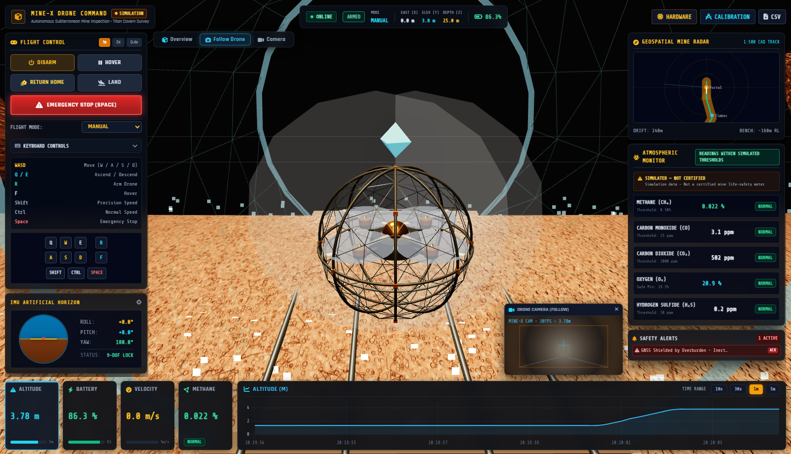
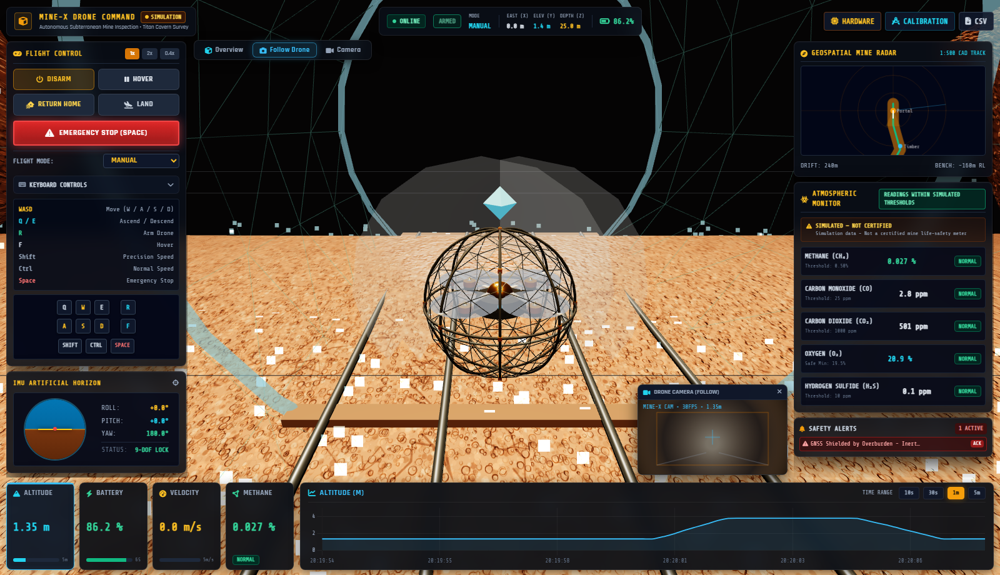
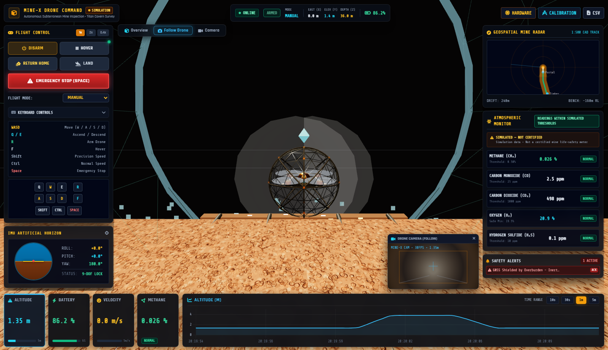
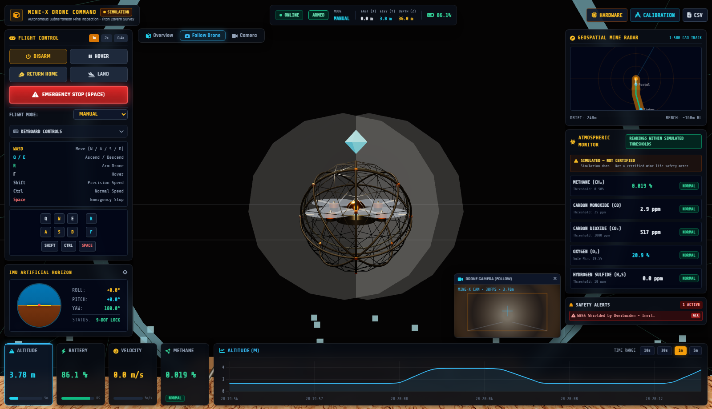
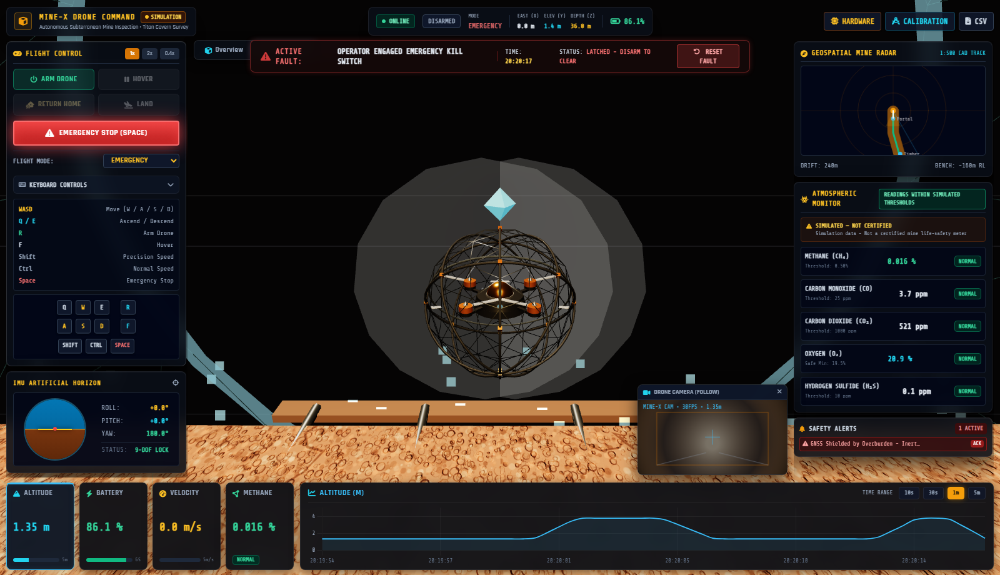
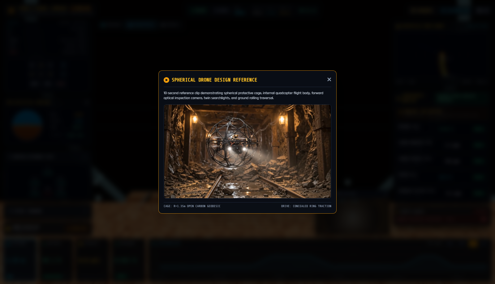
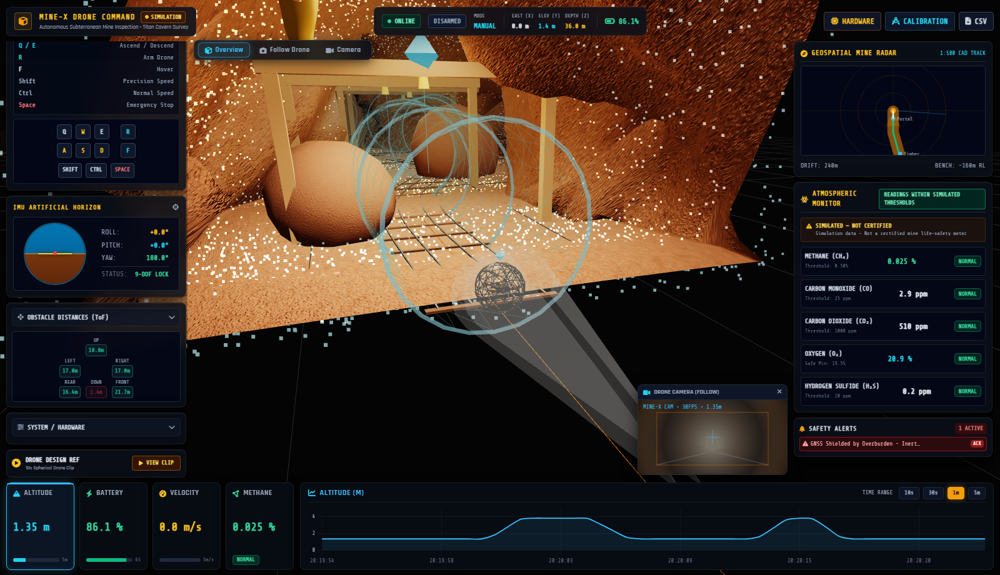

Underground mining operations involve high-risk, GPS-denied environments subject to hazardous gas accumulations (explosive methane CH₄, toxic carbon monoxide CO, oxygen depletion), structural timber collapse, and rough rock talus. Conventional wheeled ground rovers are easily immobilized by blasted rock talus and rail debris, while conventional open-rotor quadcopters suffer catastrophic crashes upon contacting mine walls, roofs, or support timbering.

Altitude 3.78m. 4 propellers active with motion blur (opacity 0.75). Outer cage stationary (rotation 0 rad). Dual searchlights illuminating cavern drifts.

Altitude 1.35m. Smooth vertical descent contacting timber haulage track rails. Propellers throttling down to soft idle.

Traversed forward from Z=25m to Z=36m. Outer cage rotated +11.815 rad along ground while inner camera core stayed strictly upright (0.022 rad).

Cage rotation ceases immediately. All 4 propellers spin up rapidly to high RPM. Smooth climb back to cruise hover at 3.78m.

Spacebar / E-Stop triggered. Motors killed immediately (0 RPM, zero blur). Latched fault banner active. Settles safely on floor.

Secondary button plays original 10-second reference video clip inside a modal overlay without disrupting the live 3D mine viewport.

Complete 240-meter haulage drift featuring timber support square-sets, haulage ore rails, talus rock cones, volumetric gas plumes, and top floating cyan locator beacon for distant zoom orientation.
| Subsystem | Design Specification | Physical Rationale / Benefit |
|---|---|---|
| Protective Outer Cage | Geodesic icosahedron wireframe (Radius = 1.35m) with 5 carbon toroid rings and anodized orange node brackets. | Open mesh allows 100% rotor airflow with zero prop-wash throttling. Protects rotors from rock walls, timber portals, and roof strikes. |
| Concealed Ground Drive | Internal drive track ring near inner cage equator + concealed micro-actuator housing tucked flush beneath chassis. | Eliminates large conspicuous external wheels that get snagged in tight mine fissures. Produces clean ground rolling locomotion. |
| Inner Gimbal Core | Double-deck carbon-fiber chassis with top brass/gold dome antenna puck and decoupled rotational kinematics. | Counter-rotates dynamically during ground rolling to keep the optical inspection camera, searchlights, and avionics strictly level. |
| Powertrain & Rotors | 4 carbon arm spars, brushless motor stators, 2-blade carbon props, and semi-transparent blur discs. | RPM dynamically scaled from telemetry packets (0-100%). Blur discs scale in opacity up to 0.75 during flight and drop to 0 on E-Stop. |
| Vision & Illumination | Forward optical inspection camera + twin high-power searchlights casting Three.js SpotLights and volumetric conical beams. | Penetrates unventilated dark mine corridors with 50-meter illumination range for visual inspection of rock faults. |
The drone executes decoupled state-based kinematic updates at 60 FPS in Three.js:
1. GROUND ROLLING KINEMATICS (Altitude <= 1.42m and Delta Distance > 0.002m): local_forward = -(dz * cos(yaw) + dx * sin(yaw)) roll_delta = (local_forward / cage_radius) * 2.2 cage_angle_x += roll_delta outerCageGroup.rotation.x = cage_angle_x // Horizon Gimbal Stabilization: innerCoreGroup.rotation.x = lerp(innerCoreGroup.rotation.x, 0.0, 0.25) innerCoreGroup.rotation.z = lerp(innerCoreGroup.rotation.z, 0.0, 0.25) 2. FLIGHT KINEMATICS (Airborne Altitude > 1.42m): outerCageGroup.rotation.x = lerp(outerCageGroup.rotation.x, 0.0, 0.08) innerCoreGroup.rotation.x = lerp(innerCoreGroup.rotation.x, target_pitch, 0.18) innerCoreGroup.rotation.z = lerp(innerCoreGroup.rotation.z, target_roll, 0.18) propeller_spin_speed = max(0.35, motor_rpm_avg * 0.008) 3. EMERGENCY STOP (Armed == False): motors_rpm = 0.0 propeller_blur_opacity = 0.0 outerCageGroup.rotation.x = ceased innerCoreGroup.rotation.x = 0.0 (level settlement)
| Test Step | Mode Evaluated | Altitude (y) | Outer Cage Roll | Inner Pitch | Motors / Blur | Status |
|---|---|---|---|---|---|---|
| Step 1 | Normal Flight | 3.78 m | 0.0 rad | 0.0 rad | Blur = 0.75 | PASSED |
| Step 2 | Landing Touchdown | 1.35 m | 0.0 rad | 0.0 rad | Idle (0.08) | PASSED |
| Step 3 | Ground Rolling | 1.35 m | +11.815 rad | 0.022 rad (Upright) | Idle (0.08) | PASSED |
| Step 4 | Takeoff | 3.78 m | 0.0 rad | 0.0 rad | Blur = 0.75 | PASSED |
| Step 5 | Emergency Stop | 1.35 m | Ceased | 0.0 rad | 0 RPM (Blur = 0.0) | PASSED |
| Step 6 | Design Ref Modal | — | — | — | Video Active | PASSED |
Clone the public repository and run locally:
# Clone repository git clone https://github.com/Dhaksith-S/Dhaksith-SIH.git # Enter project directory cd Dhaksith-SIH/mine-x-drone # Install requirements pip install -r requirements.txt # Start backend server & 3D Web Dashboard python start.py # Open browser to: http://localhost:8000